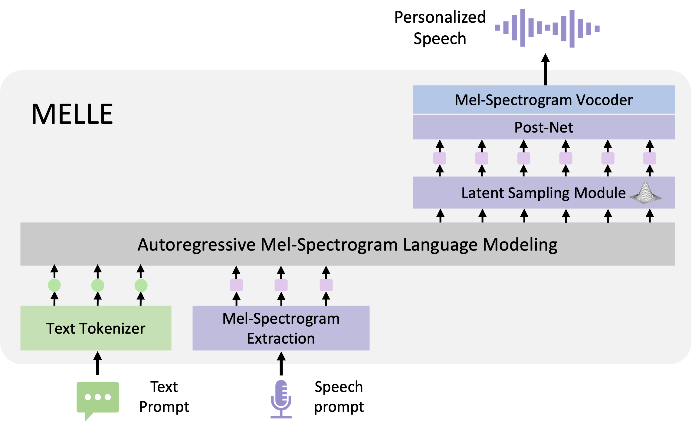

MELLE
Autoregressive Speech Synthesis without Vector Quantization
Abstract. We present MELLE, a novel continuous-valued token based language modeling approach for text-to-speech synthesis (TTS). MELLE autoregressively generates continuous mel-spectrogram frames directly from text condition, bypassing the need for vector quantization, which is typically designed for audio compression and sacrifices fidelity compared to continuous representations. Specifically, (i) instead of cross-entropy loss, we apply regression loss with a proposed spectrogram flux loss function to model the probability distribution of the continuous-valued tokens; (ii) we have incorporated variational inference into MELLE to facilitate sampling mechanisms, thereby enhancing the output diversity and model robustness. Experiments demonstrate that, compared to the two-stage codec language model VALL-E and its variants, the single-stage MELLE mitigates robustness issues by avoiding the inherent flaws of sampling vector-quantized codes, achieves superior performance across multiple metrics, and, most importantly, offers a more streamlined paradigm.
Contents
Model Overview

Figure. The overview of MELLE. Unlike discrete-valued tokens based language modeling approaches, MELLE samples the continuous variational mel-spectrogram conditioned on textual and acoustic prompts, using a single-stage decoder-only model as its foundational structures, coupled with the Latent Sampling Module.
Zero-Shot Text-to-Speech for Cross-Sentence Task
Samples are from LibriSpeech dataset.
| English Text | Speaker Prompt | VALL-E 2 | MELLE | MELLE-R2 |
|---|---|---|---|---|
| In a few hours the examination would commence, and he was still in the dilemma between making the facts public, and allowing the culprit to compete for the valuable scholarship. | ||||
| To teach reading, means to light the fire; every syllable spelled out sparkles. | ||||
| "This has indeed been a harassing day," continued the young man, his eyes fixed upon his friend. | ||||
| And it is made of mother's best yarn, and she knitted it herself, and everybody wants to get it away from me. | ||||
| And there you are. You will, of course, appreciate that the unfinished sentences not only save time, but also make the maneuvering much more natural. | ||||
| While the old gold and the marble stays, forever gleaming its soft strong blaze, calm in the early evening glow. | ||||
| "Yes, something, everything." said Rachel hurriedly, looking frowningly at a flower which she was twirling in her fingers. | ||||
| I greatly mourn that one so well-disposed should die in his ignorance, and I have sought a goodly hymn. Can you lead me to him? |
Zero-Shot Text-to-Speech for Continuation Task
Samples are from LibriSpeech dataset.
| English Text | Speaker Prompt | VALL-E 2 | MELLE | MELLE-R2 |
|---|---|---|---|---|
| Unc knocked at the door of the house, and a chubby, pleasant-faced woman dressed all in blue opened it and greeted the visitors with a smile. | ||||
| The dews were suffered to exhale, and the sun had dispersed the mists and was shedding a strong and clear light in the forest, when the travelers resumed their journey. | ||||
| And often has my mother said, while on her lap I laid my head, she feared for time I was not made, but for eternity. | ||||
| In order to please her, I spoke to her of the Abbe Conti, and I had occasion to quote two lines of that profound writer. | ||||
| He had preconceived ideas about everything, and his idea about Americans was that they should be engineers or mechanics. | ||||
| Now Delia contrived to obtain a great influence and ascendency over the minds of the children, by means of these dolls. | ||||
| This was what did the mischief so far as the running away was concerned. | ||||
| Then he rushed downstairs into the courtyard, shouting loudly for his soldiers, and threatening to punish everybody in his dominions, if the sailorman was not recaptured. |
Hard Samples
MELLE can synthesize personalized speech with the hard sentences from ELLA-V. The speaker prompts are sampled from the LibriSpeech dataset.
| English Text | Speaker Prompt | MELLE | MELLE-R2 |
|---|---|---|---|
| Two thousand two hundred twenty two happily happy two hundred and twenty-two. | |||
| Gallant gophers gracefully gambled golden gooseberries on grandiose glaciers. | |||
| The entrepreneur, driven by an insatiable insatiable insatiable insatiable insatiable desire for success, embarked on a journey filled with challenges, challenges, challenges, challenges, challenges, challenges, and triumphs. | |||
| The shimmering sheen of the silken fabric fascinated the fashionistas, creating a cacophony of compliments. | |||
| Learning from mistakes is is is is is is a crucial part of the journey to success. | |||
| Amidst the towering skyscrapers, the bustling cityscape echoed with the incessant hum hum hum hum hum of commerce and ambition. | |||
| Eager otters eagerly overcame eager eager obstacles. | |||
| The best way to predict the best way to predict the future is to create it, but sometimes, the best way to predict the future is to prevent it. | |||
| Funny ferrets fumbled fumblingly, funny funny feathers. | |||
| Confused crabs confusedly cracked confused confused crab cakes. |
Zero-Shot Text-to-Speech for Mandarin
In addition to the model described in the paper, which was trained on English corpus, we also trained a MELLE model for Mandarin text-to-speech.
This model was trained on WenetSpeech4TTS dataset and an in-house dataset,
using the same model configurations and training settings as described in the paper.
| Mandarin Text | Speaker Prompt | MELLE |
|---|---|---|
| 对，绿色的话，它就是，嗯，不穿外套的话，穿里面的衬衣，我觉得很好看，然后的话，呃，深灰色的话，我觉得就是，嗯，配卫、外套的话就是要好看一点，就有一点纠结。 | ||
| 要说别人各种各种好，其实这种话呢，不传在自己的耳朵里的话，就觉得无所谓。但是你真正有人给你讲了之后，你可能就心里还是多多少少不舒服的你知道吗？ | ||
| 它，它喜欢在那个毛拖鞋上，我也是，我也是醉了，而且不，我们不知道怎么指导它到那里上厕所，是很尴尬的事情，养了半年多长得，长得长得贼肥，然后，后来实在养不了，然后就别人也不想养，我们就是送那个宿管大叔了，不知道是吃了还是怎么样。 | ||
| 就是，就可能重庆火锅我现在打个比方来说，你在当地可能随便选一家火锅，我觉得都蛮好吃的。 | ||
| 对，然后他老了之后，感觉就没有什么比较好的了，就去年那个喜剧片，太好笑了。 | ||
| 嗯，这倒没有过，就讨厌这个倒没有过，就合眼缘的这个的话，是真的是有过。就前一两年的嘛，然后在工作当中呢认识的一个朋友，然后她比我小，但是我感觉她思想这些方面还是比较成熟的嘛。 | ||
| 对待一些事情呢，就包括说有的时候可能开完会的时候，工作当中遇到一些问题的时候，我们俩的观点想法完全是一样的，所以说 | ||
| 会不会这样，但是但是就是可能他心里那个那个意难平吧，他他的心里但是感觉平不下去，始终过不了那个坎，就觉得，我追了六七年，怎么还追不到。 | ||
| 嗯，对，但是他我们有些朋友，他并没有谈过什么恋爱，但是他，就是说一些东西感觉他就是专家一样，我也是搞不懂这样的人。 |
Ethics Statement
MELLE is purely a research project. MELLE could synthesize speech that maintains speaker identity and could be used for education, entertainment, journalistic, self-authored content, accessibility features, interactive voice response systems, translation, chat-bot, and so on. While MELLE can speak in a voice like the voice talent, the similarity, and naturalness depend on the length and quality of the speech prompt, the background noise, as well as other factors. It may carry potential risks in the misuse of the model, such as spoofing voice identification or impersonating a specific speaker. We conducted the experiments under the assumption that the user agrees to be the target speaker in speech synthesis. If the model is generalized to unseen speakers in the real world, it should include a protocol to ensure that the speaker approves the use of their voice and a synthesized speech detection model.
This page is for research demonstration purposes only.